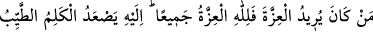
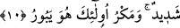
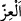

10. Kim izzet ve şeref istiyor idiyse, bilsin ki, izzet ve şerefin hepsi Allah’ındır.
O’na ancak güzel sözler yükselir (ulaşır). Onları da Allah’a amel-i sâlih ulaştırır.
Kötülüklerle tuzak kuranlara gelince, onlar için çetin bir azap vardır ve onların
tuzağı bozulur.
“Kim izzet, şeref” ve güç “istiyor idiyse, bilsin ki,” dünya ve âhirette “izzet ve
şerefin hepsi” yalnız “Allah’ındır;” başkasının değildir. Başkası bunlardan hiçbirisine
mâlik olamaz. Kişi izzet ve şerefi tâat ve takvâ ile başkasından değil, yalnızca Allah’tan
istesin.
Râğıb der ki: “İzzet (
) insanın mağlup olup yenilgiye uğramasına engel olan bir
haldir. Aziz ve kâhir olan, makhûr ve mağlûb olmayan demektir. İzzet bazen övülür.
Nitekim Allah Teâlâ şöyle buyuruyor: “Onlar: Andolsun, eğer Medine’ye dönersek,
üstün olan, zayıf olanı oradan mutlaka çıkaracaktır, diyorlardı. Halbuki asıl
üstünlük, ancak Allah’ın, Peygamberinin ve müminlerindir. Fakat münâfıklar
bunu bilmezler.” (el-Münâfikûn 63/8). Bazen de yerilir ki bu da kâfirlerin izzetidir.
Zira Allah’ın, Allah Rasûlü’nün ve müminlerin izzeti daimî, bâkî ve ebedîdir. Gerçek
izzet budur. Kâfirlerin izzeti ise kibir, gurur ve büyüklük taslamaktır ki bu gerçekte izzet
değil, zillettir.
Âyette geçen “izzet isteyenler”den murad, putlara tapmakla gururlanan müşrikler ve
müşriklerle gururlanan münafıklardır. Burada izzetin yalnız Allah’a âid olduğunu ifâde
etmek, izzetin yalnız Allah’tan istenmesi gerektiğini de ifâde eder. Bundan dolayı âyette
talep konusunu ayrıca zikretmeye hâcet yoktur. “Kim ilim isterse bilsin ki ilim, âlimler
nezdindedir” sözü de böyledir. Yâni “ilmi âlimlerden talep etsin” demektir. Çünkü bir
şey ancak o şeyin sahibi ve mâlikinden talep edilir. Yâni delil, medlûl makamına ikâme
edilmiştir.
Burada “bütün şeref Allah’ındır” buyrulurken bir başka âyette ise “Halbuki asıl
üstünlük (izzet), ancak Allah’ın, Peygamberinin ve müminlerindir” (Münâfikun
63/8) buyrulmuştur. Mânâ bakımından çelişkili gibi görünen bu durum şu şekilde îzah
edilmiştir: Tabi ki rablık ve ilahlık şerefi nitelik olarak yalnız Allah’ındır. Rasûlün
şerefi ve müminlerin şerefi ise fiilen minnet, lütuf ve ihsan bakımından yine Allah’ındır.
Bu durumda bütün şeref yine Allah’ındır. Kâşifî der ki: “O’nun izzeti ile peygamber ve
müminler şereflenmiştir. İzzet, O’na uymakla, alçaklık ise O’na muhâlefet etmekledir. O
yüce Allah’ın kapısından yüz çeviren kimse, hangi kapıya gitse itibar bulamaz.”